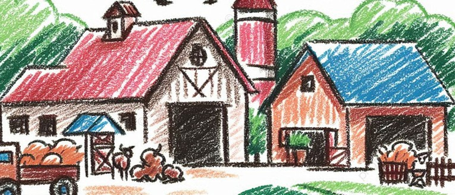
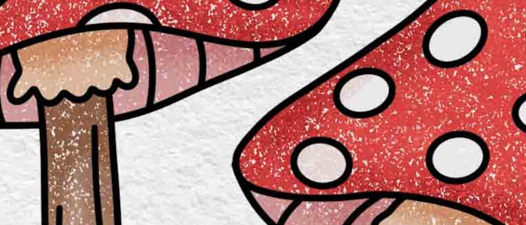
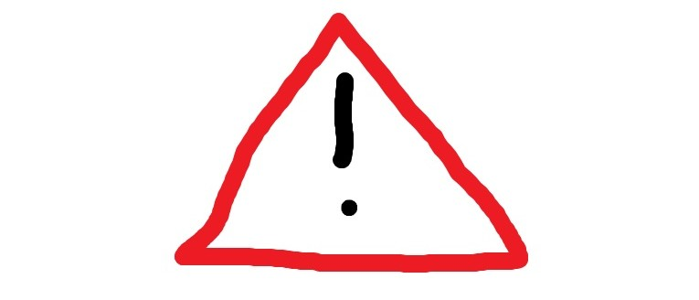

◉
The sensing device
A compact unit placed inside the growing room monitors the air for selected odor patterns that may indicate a change in conditions.
IN THE GROW ROOMSMARTER MUSHROOM FARMING
FreshSense monitors changes in the air inside mushroom growing rooms, helping growers spot potential problems and respond with confidence.

Mushroom growing depends on a carefully managed environment. But some changes in a grow room may be difficult to notice right away.
FreshSense is a compact monitoring device designed to observe unusual odor patterns in the air. When it detects a change that may need attention, it sends an alert to the grower’s phone.
Think of it as an extra set of eyes — or rather, a nose — on your growing room.

WHY AIR MATTERS
Unusual odors can be one of several signs that conditions in a growing room have changed. FreshSense is designed to help bring those changes to a grower’s attention, alongside regular farm checks and good growing practices.
See how it works →Two connected parts work together to help you keep an eye on your growing space.
A compact unit placed inside the growing room monitors the air for selected odor patterns that may indicate a change in conditions.
IN THE GROW ROOMThe app presents the monitoring status and sends a notification when an unusual reading needs your attention.
IN YOUR HANDSUnusual air pattern detected in Growing Room 2. Please inspect the area.
FreshSense is intended as a monitoring aid. Alerts should be checked by the grower and do not replace visual inspection, environmental controls, or laboratory testing.
A little more information can make daily farm management feel more manageable.
Earlier attentionBe prompted to check unusual changes as they happen.
Less guessworkUse monitoring information as another input when making farm decisions.
More consistent careSupport routine checks across your growing rooms.
Designed to be approachableClear status updates help make the system easier to understand.

INFORMATION WHEN IT MATTERSWhether you manage a small growing room or a larger indoor operation, FreshSense is being developed with practical farm routines in mind.
FRESH THINKING FOR EVERY GROWING ROOM
Get to know FreshSense and explore a more attentive approach to mushroom farm monitoring.
Contact FreshSense A healthier growing environment starts with paying attention.